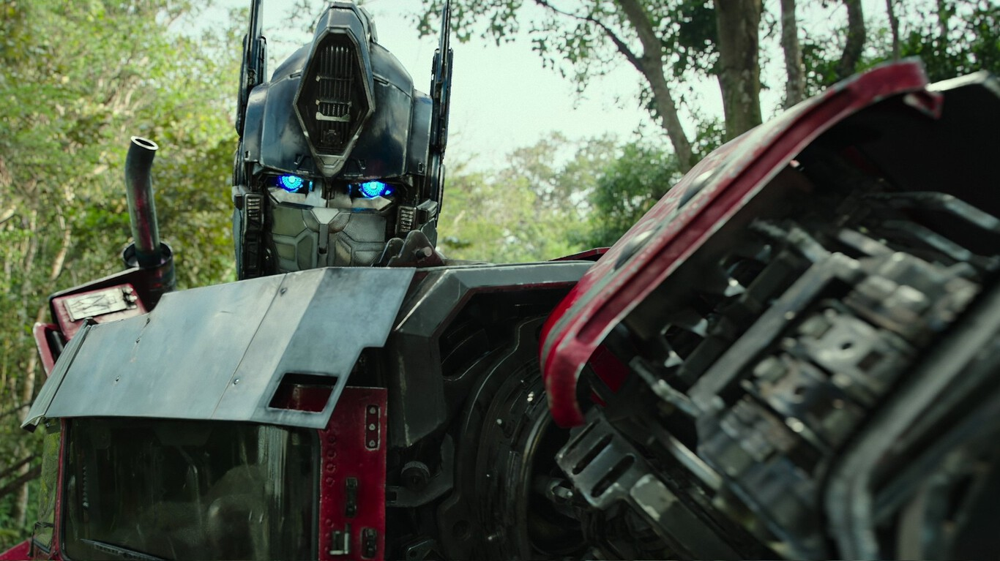

'Transformers: El despertar de las bestias': todo lo que sabemos de la séptima película de la saga de ciencia ficción
franquicia 'Transformers' es una de las más taquilleras de la historia del cine, pero con 'El último caballero' se notó que el interés del público hacia la misma había decaído. Una apuesta económica más moderada con la notable 'Bumblebee' dejó claro que la saga todavía podía tenía tirón y en Paramount no tardaron demasiado en dar luz verde a 'Transformers: El despertar de las bestias'.
El histórico éxito de su primer tráiler ha dejado claro que el público tiene ganas de ver 'Transformers: El despertar de las bestias' y a continuación vamos a repasar en profundidad todo lo que sabe hasta el momento sobre esta séptima película de la saga. Eso sí, finalmente será un reboot que tomará como base 'Bumblebee' en lugar de las cinco aventuras dirigidas por Michael Bay y que sin duda es una de las películas más esperadas de 2023.